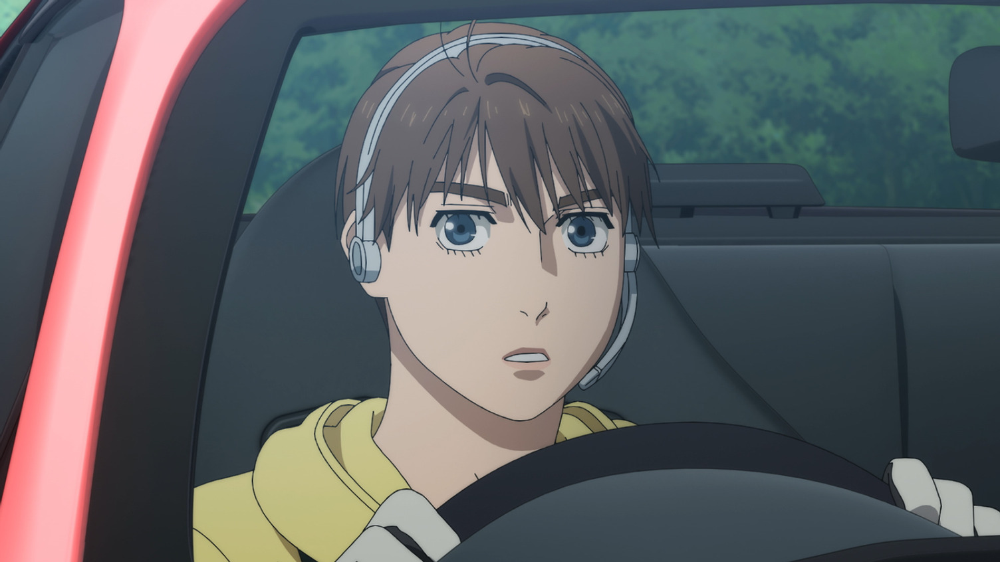

Initial D e suas curiosidades
O anime utilizou marcas reais de montadoras
Uma das maiores marcas registradas de Initial D é o nível de fidelidade mecânica e técnica que o autor Shuichi Shigeno aplicou na obra.
Diferente de muitos animes onde os carros são genéricos ou fictícios, em Initial D todos os veículos — desde o modesto AE86 de Takumi até o RX-7 de Keisuke ou o GT-R de Nakazato —
possuem especificações exatas, tração real e comportamento de dirigibilidade fiéis aos modelos fabricados pelas montadoras japonesas nos anos 90.
Além de popularizar mundialmente a cultura JDM (Japanese Domestic Market) e as manobras de drift em estradas de montanha, o anime transformou o Corolla AE86
em um verdadeiro ícone pop automotivo, fazendo com que o preço de carros usados desse modelo disparasse no mundo inteiro após o sucesso da série.


O boom do Eurobeat após o anime
Initial D foi o responsável por salvar, transformar e imortalizar o Eurobeat globalmente. Antes do anime estrear em 1998, o gênero já dava sinais de desgaste no
Japão. Ao colocar o Eurobeat como trilha sonora das batalhas de carro, a gravadora Avex apresentou o ritmo a milhões de jovens fãs de anime e entusiastas
automotivos que nunca tinham pisado em uma pista de dança. As vendas das coletâneas Super Eurobeat dispararam novamente, ganhando edições temáticas exclusivas
de Initial D e garantindo a sobrevida comercial dos estúdios produtores na Itália por mais duas décadas.
Separamos dois exemplos de músicas ao estilo Eurobeat que descrevem bem a inserção deste estilo no anime, você pode conferir logo abaixo.
Deja Vu, um dos eurobeat mais famosos
Rage your dream, música marcante no anime

O espaço feminino no anime
No anime, conhecemos ao decorrer das temporadas, Mako Sato e Sayuki que formam uma das duplas mais marcantes e queridas de Initial D, conhecidas nas estradas de Gunma
pelo codinome Impact Blue e pilotando um icônico Nissan Sil80 azul-metálico.
Elas quebram totalmente o padrão das equipes da série por serem a única dupla principal
composta por duas mulheres e por demonstrarem uma dinâmica de equipe impecável, quebrando assim um tabu nos anos 90 sobre as mulheres no meio automotivo.
Curiosidade sobre elas é que posteriormente, o criador do anime Shigeno, fez um filme canônico contando exclusivamente sobre a dupla da Impact Blue.

O que acontece com Takumi após o anime?
A notícia é boa! Takumi continua em MF Ghost, na continuação oficial escrita por Shuichi Shigeno (MF Ghost, ambientada nos anos 2020), é revelado o destino adulto de
Takumi que após os acontecimentos de Initial D, ele foi para o Reino Unido competir profissionalmente no Campeonato Britânico de Rally, onde se tornou campeão.
No entanto, pouco antes de estrear no Mundial de Rally (WRC), sofreu um grave acidente durante um teste por falha mecânica, encerrando precocemente sua carreira nas
pistas e passando a atuar como instrutor de pilotagem na prestigiosa escola de corrida Royal Donington Park Racing School (onde treinou o protagonista de MF Ghost, Kanata Livington).
Na foto a esquerda, Kanata Kataguiri, protagonista de MF Ghost e discípulo de Takumi.
A Trilha Sonora Marcante
Se você quiser mergulhar ainda mais de cabeça na atmosfera eletrizante das corridas de montanha, nada melhor do que ouvir os clássicos que embalaram cada drift de Takumi. Preparamos uma seleção especial com as melhores faixas de Eurobeat que marcaram época. Basta dar o play na playlist ao lado para sentir a adrenalina e curtir o som enquanto navega pelo site!